Text size
What Makes A Good Off-Road SUV?
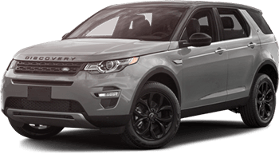
Land Rover Discovery Sport
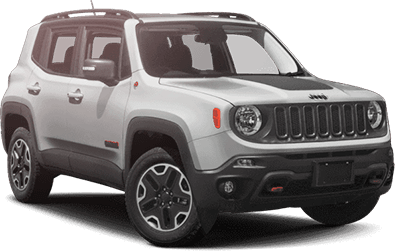
JeepRenegade
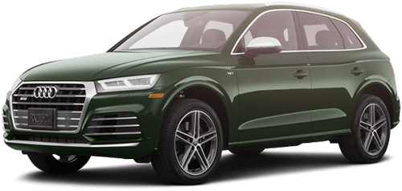
AudiQ5
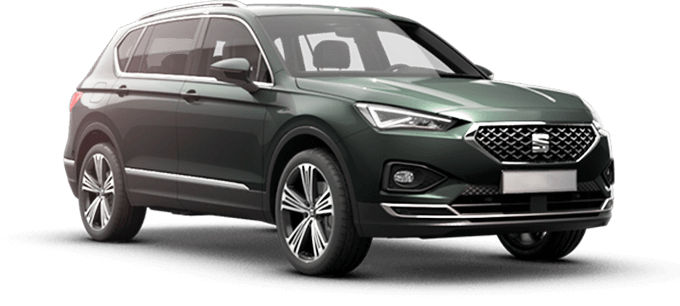
SEATTarraco
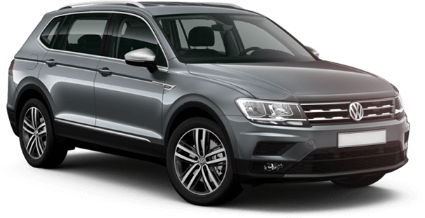
VolkswagenTiguan Allspace
With so many SUVs being used for everyday travel, we sometimes forget that the first Sports Utility Vehicles were designed to get to places other cars couldn’t reach. While a lot of today’s SUVs are two-wheel-drive versions, their higher profile and generally wider tyres are still an advantage when tackling rough terrain.
It’s the 4x4 capability that sets aside the best off-road SUVs from the rest of the bunch, ensuring great grip and excellent handling, whatever the terrain. We take a look at a few of our favourites, built with the more intrepid driver in mind, and discover what makes a good off-road SUV.
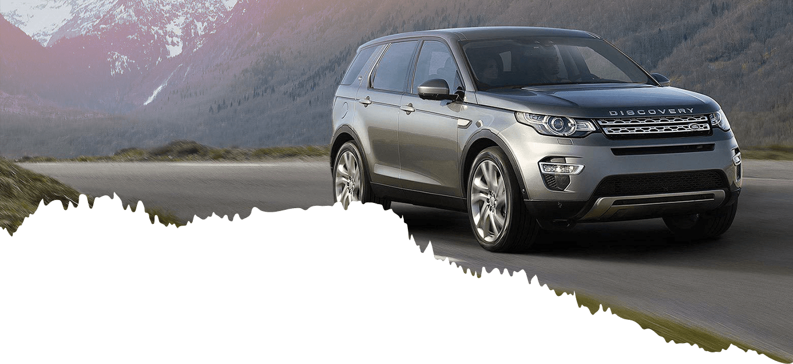
Land Rover Discovery Sport
Land Rover is the first name most people think of whenever an off-road SUV is mentioned. Even though it’s the smallest in the Land Rover range, the Discovery Sport isn’t short on 4x4 capability which is offered with all engine options. Reactive steering makes this SUV easy to handle on the twistiest of country roads where grip is optimised by the Terrain Response system, adjustable for mud, sand, snow and rocks.
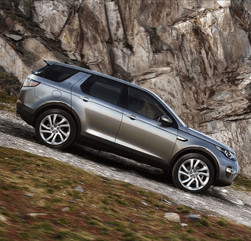
With firm suspension, the Land Rover Discovery Sport is great for motorway cruising too. Throw in a wading depth of 600mm, and the option of 5 or 5+2 seats, and you’ve got a pretty good all-rounder.
- Land Rover Discovery Sport Specifications
- Trims Available Discovery Sport
- 4x4 Automatic Engine Options 2.0 D150 | 2.0 D180 | 2.0 D240 | 2.0 P200 | 2.0 P250
- Length 4,597 mm
- Width (including door mirrors) 2,173 mm
- Height (maximum) 1,727 mm
- Wheelbase 2,741 mm
- Boot Volume 5 Seats (rear seats folded / unfolded) 1,794 / 1,179 litres
- Boot Volume 5 + 2 Seats (all rear seats folded / third row folded / unfolded) 1,651 / 1,036 / 157 litres
- Most Economical (WLTP combined) 40.9 mpg* (D150)
- Top Speed 140 mph (P250)
- Fastest Acceleration (0-62 mph) 7.1 sec (P250)
- Max Torque 500 Nm (D240)
- Max Towage (braked) 2,200 kg (D150 / D180 / D240 5+2)
- Turning Circle 11.8 m
- Ground Clearance 212 mm
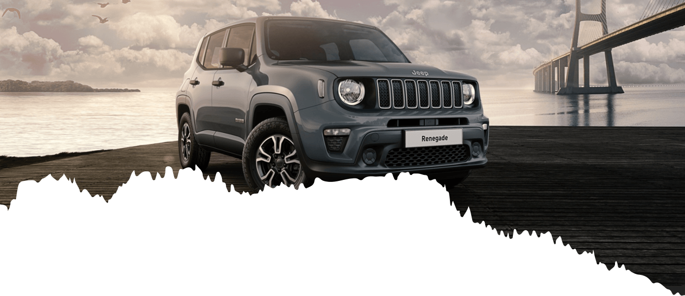
Jeep Renegade
Relatively new to the market, the Jeep Renegade is another compact but oh-so capable off-road SUV. Jeep’s unmistakable seven-slot grille complements the contemporary styling with roof rails, bright exhaust and distinctive headlights. Inside, Bluetooth, cruise control and MY Sky roof removable panels are a few of the features that prove you don’t have to rough it when you go off-road.
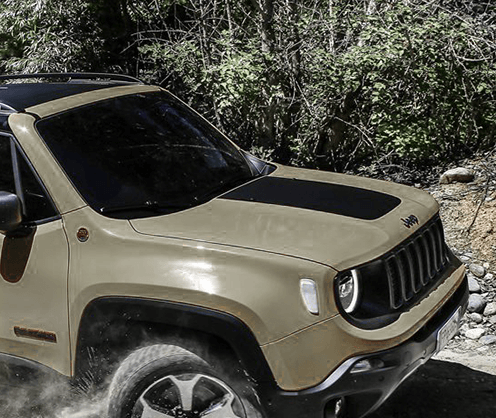
4x4 is offered on the larger Jeep Renegade 2.0-litre engines with Active Drive system that allows seamless transition into four-wheel-drive at any speed. Choose your level of engagement by opting for the 9-speed automatic or 6-speed manual dual clutch transmission. Enjoy!
- Jeep Renegade Specifications
- Trims Available Sport | Longitude | Limited | Trailhawk
- 4x4 Engine Options 2.0 MultiJet II 140 4WD
- 4x4 Automatic Engine Options 2.0 MultiJet II 140 4WD | 2.0 MultiJet II 170 4WD
- Length 4,236 mm
- Width (including door mirrors) 1,805 mm
- Height (maximum) 1,697 mm
- Wheelbase 2,570 mm
- Boot Volume (rear seats folded / unfolded) 1,297 / 351 litres
- Most Economical (WLTP combined) 48.7 mpg* (1.6 MultiJet II 120)
- Top Speed 122 mph (2.0 MultiJet II 170 / 1.3 T4 Turbo 150)
- Fastest Acceleration (0-62 mph) 9.4 sec (1.3 T4 Turbo 150)
- Max Torque 350 Nm (2.0 MultiJet II 140 / 2.0 MultiJet II 140 AT / 2.0 MultiJet II 170 AT)
- Max Towage (braked) 1,500 kg
- Turning Circle 11.07 m
- Ground Clearance 175 mm
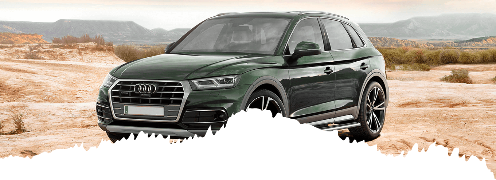
Audi Q5
Quality meets practicality in the Audi Q5. A superior interior using high-end materials and modern design makes it a pleasure - both on and off-road. The multi-function steering wheel allows you to keep a firm grip on challenging terrain while plenty of storage keeps essentials like phones, snacks and drinks under control.
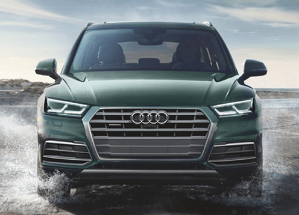
Both engine options - petrol and diesel - benefit from Audi’s excellent quattro four-wheel drive system. Combine this with optional Adaptive Air Suspension for a superbly smooth off-road SUV experience. The ability to disengage the rear wheels when cruising helps improve economy and proves that not all of the Audi Q5’s talents lie in the rough.
- Audi Q5 Specifications
- Trims Available Sport | S line | Black Edition | Vorsprung
-
4x4 Engine Options
2.0 40 TDI 190 quattro S tronic
2.0 45 TFSI 245 quattro S tronic - Length 4,663 mm
- Width (including door mirrors) 1,893 mm
- Height (maximum) 1,659 mm
- Wheelbase 2,819 mm
- Boot Volume (rear seats folded / unfolded) 1,550 / 550 litres
- Most Economical (WLTP combined) 38.2 mpg* (40 TDI 190)
- Top Speed 147 mph (45 TFSI 245)
- Fastest Acceleration (0-62 mph) 6.4 sec (45 TFSI 245)
- Max Torque 400 Nm
- Max Towage (braked) 2,400 kg
- Turning Circle 11.7 m
- Ground Clearance 200 mm
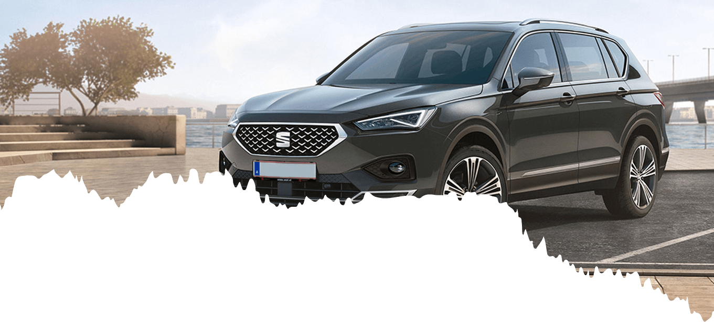
SEAT Tarraco
SEAT has well and truly thrown its hat in the ring for the off-road SUV crown with its increasing range. The SEAT Tarraco is the biggest of the three, offering seven seats as standard as well as optional 4Drive. In the looks department, it competes well with more expensive models with an unusually sporty feel for a large car.
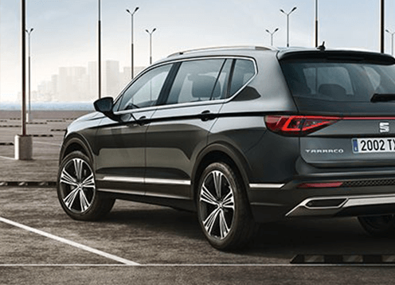
If you’re looking for towing ability, pulling power is better with the diesel options, which also provide the best economy. Handling on corners is good, steering is responsive and if you’re taking to the hills, the automatic transmission will handle slopes a little better, all ably assisted by a choice of driving modes.
- SEAT Tarraco Specifications
- Trims Available SE | SE Technology | Xcellence | Xcellence Lux
- 4x4 Automatic Engine Options 2.0 TDI 4Drive 150PS | 2.0 TDI 4Drive 190PS | 2.0 TSI 4Drive 190PS
- Length 4,735 mm
- Width (including door mirrors) 2,118 mm
- Height (maximum) 1,674 mm
- Wheelbase 2,790 mm
- Boot Volume (all rear seats folded / third row folded / unfolded) 1,775 / 700 / 230 litres
- Most Economical (WLTP combined) 47.9 mpg* (2.0 TDI 150PS)
- Top Speed 130 mph (2.0 TDI 190PS)
- Fastest Acceleration (0-62 mph) 8.0 sec (2.0 TDI 190PS | 2.0 TSI 190PS)
- Max Torque 400 Nm (2.0 TDI 190PS)
- Max Towage (braked) 2,200 kg
- Turning Circle 11.9 m
- Ground Clearance 200 mm
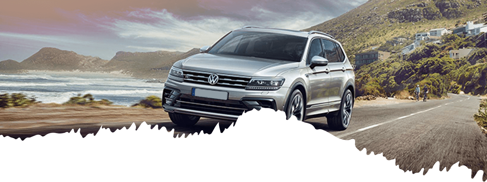
Volkswagen Tiguan Allspace
This seven-seat variation of the VW Tiguan may be longer but thanks to optional adjustable suspension it doesn’t compromise on handling or ride quality. The seven-speed dual-clutch automatic transmission allows smooth transition when demanding terrain calls for it, while vehicle status reports from the Car-Net Service package will reassure you that your SUV is ready for the trip, even before you set off.
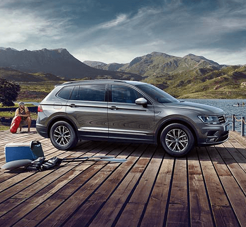
The additional legroom in the VW Tiguan Allspace is a distinct advantage over other off-road SUVs, allowing you to relax while the optional Discover Navigation Pro infotainment system directs you to the beach, mountains or wherever your adventurous mood takes you.
- Volkwagen Tiguan Allspace Specifications
- Trims Available SE Navigation | SEL | R-Line
- 4x4 Engine Options 2.0 TDI 150PS 4Motion
- 4x4 Automatic Engine Options 2.0 TSI 180PS 4Motion | 2.0 TDI 150PS 4Motion | 2.0 TDI 190PS 4Motion | 2.0 BiTDI 240PS 4Motion
- Length 4,701 mm
- Width (including door mirrors) 2,099 mm
- Height (maximum) 1,674 mm
- Wheelbase 2,787 mm
- Boot Volume (all rear vws folded / third row folded / unfolded) 1,775 / 700 / 230 litres
- Most Economical (WLTP combined) 46.3 mpg* (2.0 TDI 150PS)
- Top Speed 142 mph (2.0 BiTDI 240PS)
- Fastest Acceleration (0-62 mph) 6.8 sec (2.0 BiTDI 240PS)
- Max Torque 500 Nm (2.0 BiTDI 240PS)
- Max Towage (braked) 2,500 kg (2.0 BiTDI 240PS)
- Turning Circle 11.9 m
- Ground Clearance 201 mm